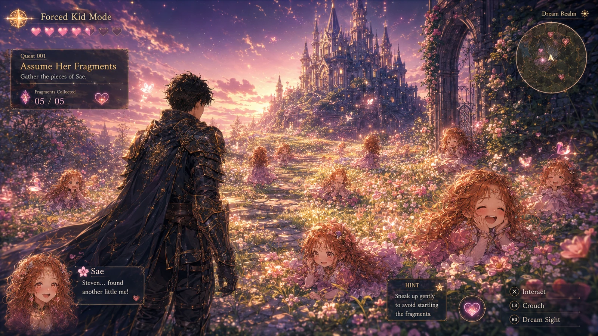

{kind=link}
 ↗
↗
ONE WORLD / MANY WAYS THROUGHA little farther.
A little farther.
A lot more world.
Follow a light. Find a fragment. Leave something worth returning to.
Look inside ↗RECOVERED, NOT REINVENTED
The pictures were already here.
12 original artworks
↗ ↗
↗EverDelve: Garden Central
Crossing ↗
↗Enchanted Tower Garden Sanctuary
Crossing ↗
↗The princess who could not leave the tower
Origins ↗
↗Astral assembly
Worlds ↗
↗Assume her fragments
Play ↗
↗Sae · dream guide
Sae & company ↗
↗Princess letter · Storyload
Origins ↗
↗Sae and Knight · future key art
Sae & company ↗
↗Dreambound promises
Origins ↗
↗Gen22 · watercolor origin
Origins ↗
↗Play creates the world
Worlds ↗
↗Start at obsproject.com
Learn / OBS Windows 11 ↗
↗App ≠ settings ≠ recordings
Learn / OBS Windows 11 ↗
↗One scene. One clear source.
Learn / OBS Windows 11 ↗
↗Picture + voice + privacy
Learn / OBS Windows 11 ↗
↗Pick the folder. Record to MKV.
Learn / OBS Windows 11 ↗
↗The saved clip is the proof.
Learn / OBS Windows 11No pictures match that trail. Clear the search or try another room.
Sources, the next art thread, and what stays private ◇
One wall. Honest names.
These are twelve distinct recovered originals. Preview files are smaller derivatives. Descriptive titles, original filenames and source fingerprints stay separate. Artwork is not evidence of an actual software deployment or a real person’s identity.
Browse the art manifest ↗Image inclusion record ↗Keep the thread.
Next: a Goober-specific Outrider route, workshop and Wayfinder outpost. The recovered Grok gallery’s rooms, filmstrip and pan/zoom informed this browser. We did not import another world’s quest permissions.
Pick up the art yarn ↗This update’s receipts ↗Public pictures, private context.
Private conversation screenshots, uncertain portraits and blocked originals are not exposed through a public URL. No reverse-image search or private-network probing runs here. Local notes remain in the browser profile, not a secure shared vault.
Names and doorways ↗Earlier source trail ↗